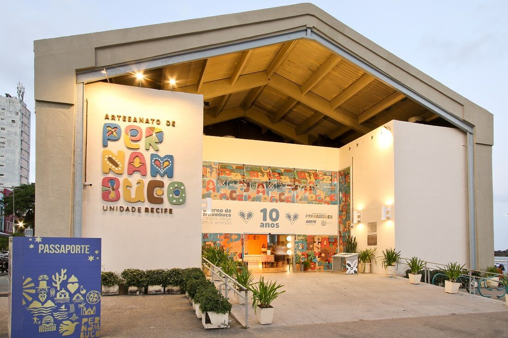

CENTRO DE ARTESANATO DE PERNAMBUCO
Instalado no Armazém 11 do porto do Recife, ao lado do Marco Zero, ocupa uma área construída de 2.511 m². O espaço conta com cerca de 16 mil peças de 500 artesãos de todas as regiões de Pernambuco para comercialização, auditório climatizado com 120 lugares, área de exposições e setor administrativo. A loja tem artesanato das mais diversas matérias-primas, como cerâmica, madeira, vidro, metal, renda, têxtil e outros.